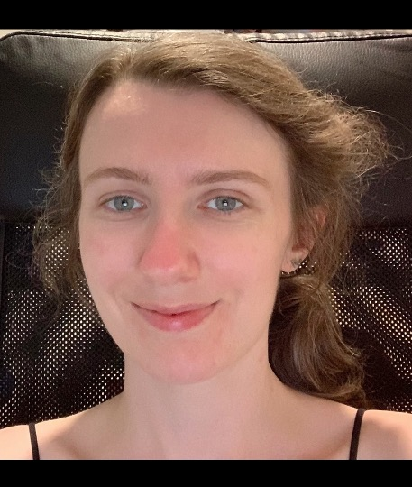

Main team
Ana Duarte Cabral (PI)
Royal Society University Research Fellow
✉

Anne Buckner
Postdoc
✉
Helena Faustino Vieira
Postdoc (@Stockholm University)
✉
Eva Durán Camacho
Postdoc (@IAC Tenerife)
✉